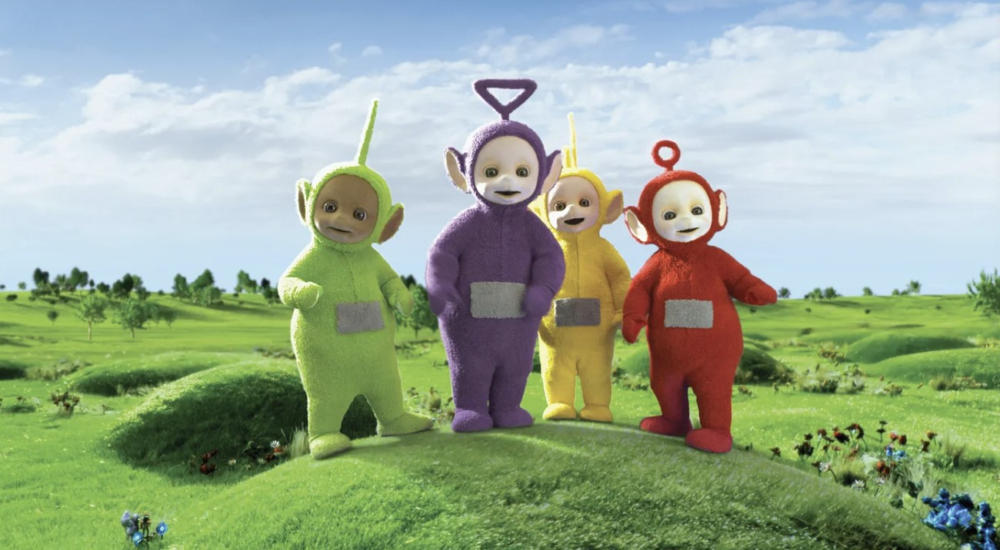

Teletabiler
Teletabiler, 1997-2001 yılları arasında BBC tarafından üretilen ve yayınlanan bir İngiliz çocuk televizyon dizisidir. Dizi, dört renkli karakterden oluşan Teletabiler'in maceralarını konu alır: Tinky Winky (mor), Dipsy (yeşil), Laa-Laa (sarı) ve Po (kırmızı). Her Teletabilin karnında bir televizyon ekranı bulunur ve bu ekranlar aracılığıyla çeşitli videolar izlerler.
Teletabiler konusu genellikle Teletabiler'in arkadaşlarıyla birlikte yaşadığı maceralar ve korku dolu olaylar etrafında döner. Teletabiler'in komik davranışları ve arkadaşlarıyla olan etkileşimleri sayesinde çocuklara eğlence ve eğitimi bir arada sunar.
Sizler de bu keyifli ve eğlence dolu çizgi filmi çocuklarınıza rahatlıkla izletebilirsiniz.